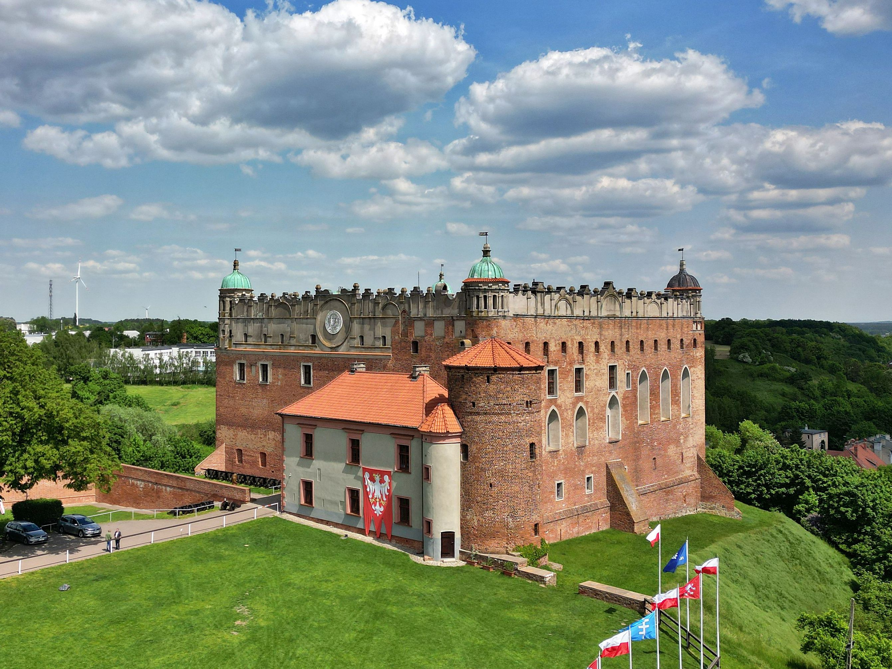
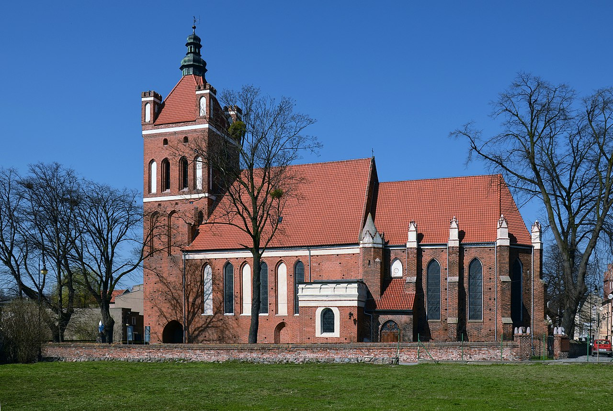
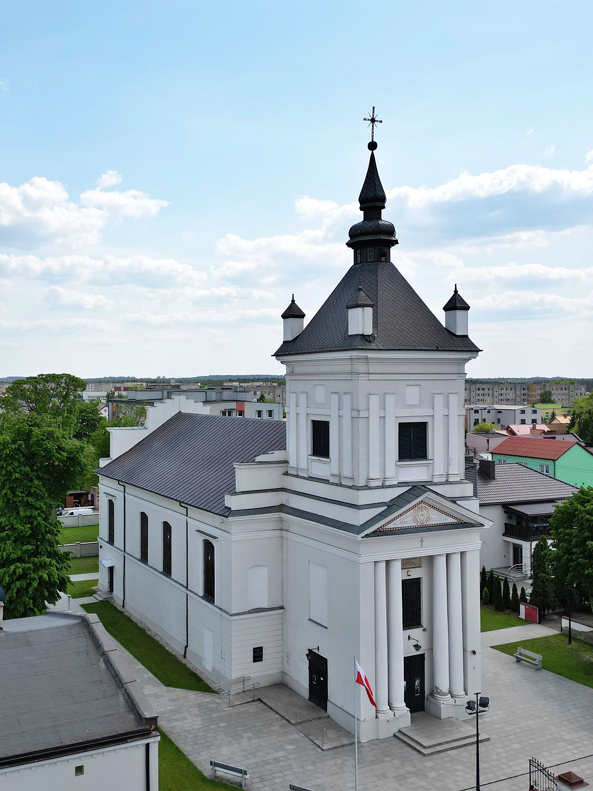

Miasto w Polsce położone w województwie kujawsko-pomorskim, siedziba powiatu golubsko-dobrzyńskiego i gminy wiejskiej Golub-Dobrzyń.
Golub-Dobrzyń - powstał formalnie 15 maja 1951 (de facto już w 1941 roku) przez połączenie miast Golubia i Dobrzynia nad Drwęcą, leżących na przeciwległych brzegach Drwęcy. Rzeka nie tylko oddzielała od siebie miasta, lecz także stanowiła linię graniczną między Polską a państwem zakonu krzyżackiego w latach 1231–1454; w latach 1466–1772 oddzielała woj. chełmińskie od ziemi dobrzyńskiej, a od 1815–1918 oddzielała zabór pruski od rosyjskiego. Prawobrzeżny Golub był miastem już w XIV w., chociaż dokładna data ustanowienia jego praw miejskich nie jest znana. Pierwszy dokument lokacyjny zaginął już w średniowieczu. Wznowił go wielki mistrz zakonu krzyżackiego Michał Küchmeister w roku 1421. W 1772 r. znalazł się w zaborze pruskim, przejściowo w latach 1807–1815 w Księstwie Warszawskim, po czym ponownie w Królestwie Prus do 1918 r. Jest prawie sześć razy mniejszy od Dobrzynia; w 2011 roku liczył 1887 mieszkańców. Lewobrzeżny Dobrzyń nad Drwęcą posiadał prawa miejskie w latach 1789–1870 i ponownie od 1919. W 1793 r. znalazł się w zaborze pruskim, od 1807 do 1815 w Księstwie Warszawskim, później w Królestwie Polskim do 1832 r., a następnie w Imperium Rosyjskim aż do 1918 r.
Golub
Dobrzyń
Zamek w Golubiu – czteroskrzydłowy konwentualny zamek krzyżacki z przełomu XIII i XIV wieku, wzniesiony na wzgórzu górującym nad miastem, obecnie w granicach miasta Golub-Dobrzyń; zachowany w stylu gotycko-renesansowym, należał do starostwa golubskiego w 1664 roku.
Kościół św. Katarzyny Aleksandryjskiej – kościół katolicki w Golubiu, pochodzący z przełomu XIII i XIV w., wzniesiony z cegły w stylu gotyckim z użyciem zendrówki.
Kościół Świętej Katarzyny – jeden z dwóch kościołów rzymskokatolickich w mieście Golub-Dobrzyń, w województwie kujawsko-pomorskim. Mieści się w dzielnicy Dobrzyń nad Drwęcą. Należy do dekanatu dobrzyńskiego nad Drwęcą diecezji płockiej. Mieści się przy Placu Tysiąclecia.
